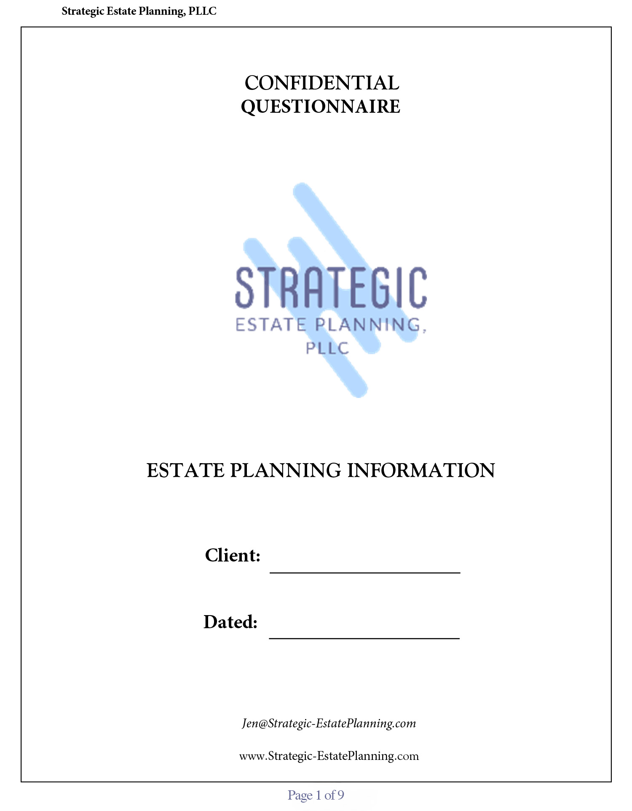

01
Getting started
An approachable intake experience organizes client information and establishes a professional first impression.

The questionnaire cover introduces the firm and provides clear fields for client details alongside contact information.